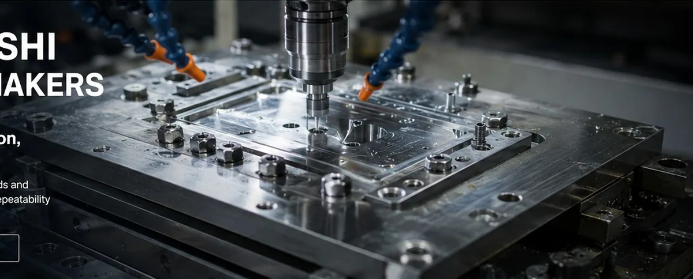
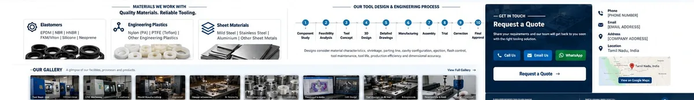

Gallery
Gallery
Representative visuals covering tooling, machining, components and the manufacturing environment.
Tooling • Machining • Inspection
Industrial manufacturing visuals.
These are representative visuals already supplied with the project; they are not presented as named client projects or certified case studies.



